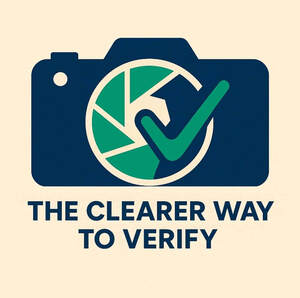

Trade Mark Journal No.2025/050 12 December 2025
UK00004304714 3 December 2025 (9,36,42)

- Class 9
- Downloadable mobile applications; downloadable software for capturing, verifying and sharing photographic and video evidence; downloadable software for project management, work verification and automated payment processing; downloadable software for digital verification and proof-of-work systems; downloadable software for geolocation tagging and timestamping of images and videos; downloadable software for managing financial transactions, payments and escrow services; computer software for use in authentication, verification and digital record keeping; downloadable computer software for cloud-based verification and proof management.
- Class 36
- Financial transaction services; payment processing services; electronic funds transfer; escrow services for secure financial transactions; financial services for managing and automating payments between clients and service providers; online payment verification services; providing secure payment systems incorporating digital verification of work completion; financial services enabling the release of funds upon verified task or project completion; electronic payment services integrating photographic, video, and geolocation verification data.
- Class 42
- Software as a service (SaaS) featuring software for capturing, verifying, and sharing photographic and video evidence between clients and service providers; providing online non-downloadable software for project management, work verification, and automated payment processing; providing temporary use of non-downloadable software for digital verification and proof-of-work systems; design and development of computer software for authentication, verification, and digital record keeping; cloud-based verification platforms integrating geolocation, timestamped media, and financial transaction management; hosting of software platforms for secure proof-of-work and payment release systems.
Yamani Clarke- Belnavis